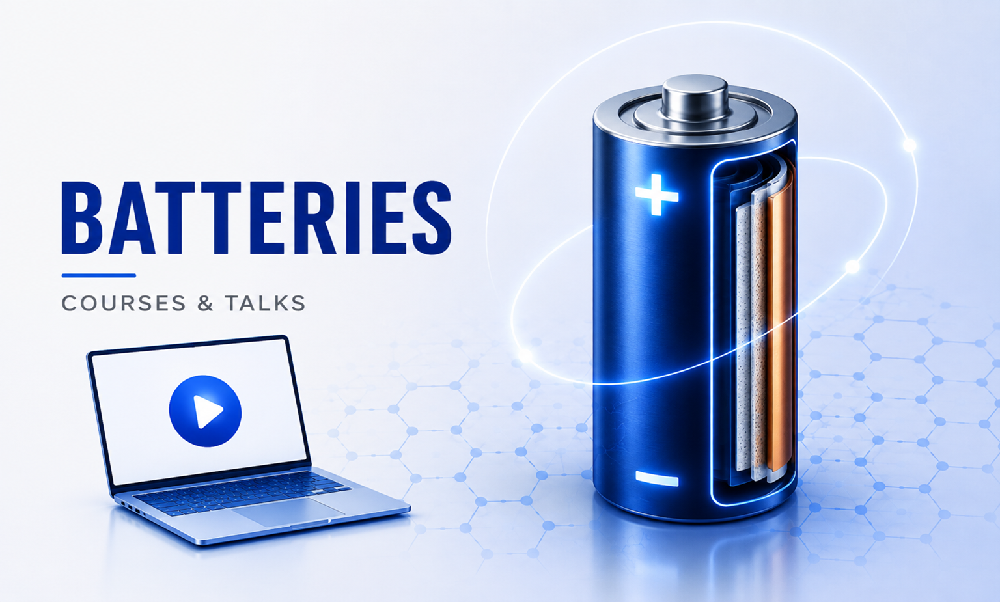
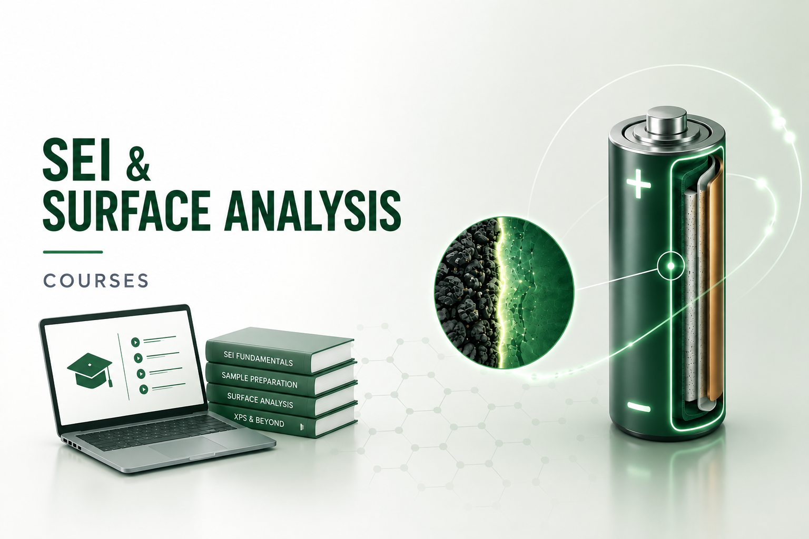
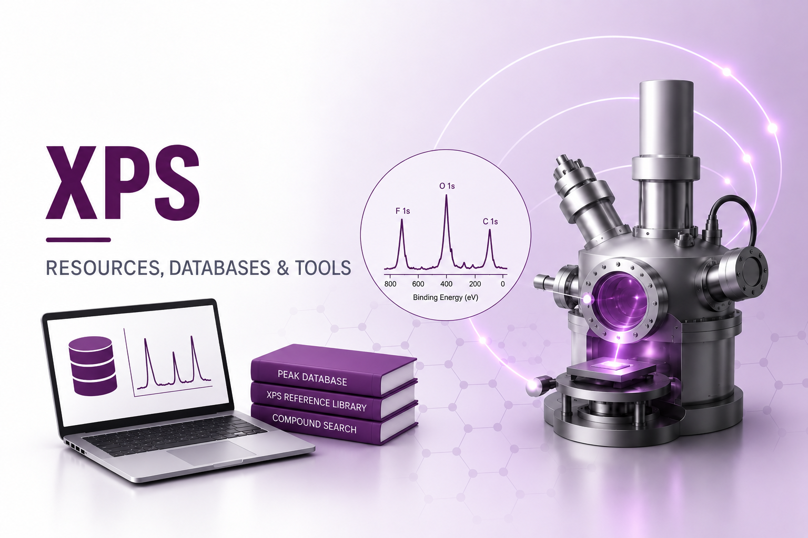

Learning & reference resources
Resources
Browse learning materials and selected resources
Courses, seminars and selected resources for batteries, SEI, surface analysis and XPS.

Courses & Seminars
Batteries
Online courses and seminars on battery history, fundamentals, materials and current research.
Browse battery resources →
Resources
SEI & Surface Analysis
Resources on the SEI, sample preparation and analysis methods, with original teaching material added progressively.
Browse SEI resources →
Resources, databases & tools
XPS
Learn XPS with external material, reference databases and tools.
Explore XPS resources →